<title>HarshaDhwani Receiver</title>
<meta name="claude:viewport-fit-sides" content="cover">
<meta name="description" content="ShreeHarsha, Voice of Versatility. 10 forms of music, AIR national hat-trick, SaReGaMaPa 13 2nd runner-up, HarshaDhwani concerts in 23 international cities, and the flagship concert Bhajana Bharata.">
<link rel="preconnect" href="https://fonts.googleapis.com">
<link rel="preconnect" href="https://fonts.gstatic.com" crossorigin>
<link rel="stylesheet" href="https://fonts.googleapis.com/css2?family=Gloock&family=Marcellus+SC&family=Alegreya+Sans:ital,wght@0,400;0,500;0,700;1,400&family=Noto+Serif+Kannada:wght@500;700&family=IBM+Plex+Mono:wght@400;500;600&display=swap">
<style>
/* Layout: an evening concert hall in maroon and gold. A radio dial runs the show; each music form owns a colour that warms the page when tuned. Wide airy type, ruled compartments, sideways strips you can scroll or drag. Single deliberate look. */
:root{
  --ground:#3B0B17;     /* maroon ground */
  --ground-2:#4C1121;   /* raised panel */
  --ground-3:#6A1E32;   /* rules */
  --sanctum:#260710;    /* deepest */
  --cream:#F7ECDA;      /* main text */
  --cream-soft:#D9BFA3; /* secondary text, 7.5:1 */
  --gold:#E3B04B;
  --gold-pale:#F4DCA4;
  --saffron:#F08A2C;
  --lotus:#F2709C;
  --turmeric:#F5C542;
  --leaf:#A6CF5A;
  --peacock:#3EC1B6;
  --sky:#7CC4F2;
  --lilac:#C3A3FF;
  --vermilion:#FF7A52;
  --kumkum:#C21D3A;
  --tune:var(--gold);
  --f-display:"Gloock",Georgia,"Times New Roman",serif;
  --f-caps:"Marcellus SC",Georgia,serif;
  --f-body:"Alegreya Sans","Segoe UI",Helvetica,Arial,sans-serif;
  --f-mono:"IBM Plex Mono",ui-monospace,Menlo,Consolas,monospace;
  --f-kn:"Noto Serif Kannada","Tunga",serif;
  --rule:1px solid var(--ground-3);
  color-scheme:dark;
}
*{box-sizing:border-box}
html{scroll-behavior:smooth}
body{background:var(--ground);color:var(--cream);font:400 17px/1.6 var(--f-body);margin:0;overflow-x:hidden}
body::before{content:"";position:fixed;inset:0 0 auto;height:env(safe-area-inset-top,0px);z-index:30;background:var(--sanctum)}
a{color:inherit}
img{max-width:100%}
:focus-visible{outline:3px solid var(--tune);outline-offset:3px}
.wrap{max-width:1320px;margin:0 auto;padding-left:max(16px,env(safe-area-inset-left,0px));padding-right:max(16px,env(safe-area-inset-right,0px))}
.caps{font-family:var(--f-caps);letter-spacing:.13em;font-size:.8rem}
.mono{font-family:var(--f-mono);font-size:.72rem;letter-spacing:.08em;text-transform:uppercase}
.kn{font-family:var(--f-kn);letter-spacing:0}
h1,h2,h3{font-family:var(--f-display);font-weight:400;line-height:1.02;margin:0;text-wrap:balance}
p{margin:0}
.tint{color:var(--tune);transition:color .4s}

.strip{background:color-mix(in oklab,var(--sanctum) 90%,transparent);backdrop-filter:blur(8px);position:sticky;top:env(safe-area-inset-top,0px);z-index:25;border-bottom:1px solid color-mix(in oklab,var(--gold) 30%,transparent)}
.strip .wrap{display:flex;gap:10px 20px;align-items:center;justify-content:space-between;padding-block:10px;flex-wrap:wrap}
.strip nav{display:flex;gap:4px 18px;flex-wrap:wrap;align-items:center}
.strip a{text-decoration:none;color:var(--cream-soft)}
.strip a:hover{color:var(--cream)}
.strip a.bb{color:var(--sanctum);background:var(--gold);padding:4px 10px}
.strip a.bb:hover{background:var(--gold-pale);color:var(--sanctum)}
.brand{display:inline-flex;gap:10px;align-items:center;color:var(--cream)}
.brand i{width:9px;height:9px;border-radius:50%;background:var(--tune);display:inline-block;transition:background .4s}

.hero{position:relative;overflow:hidden;background:radial-gradient(ellipse 60% 70% at 78% 60%,color-mix(in oklab,var(--kumkum) 45%,var(--ground)) 0,var(--ground) 62%,var(--sanctum) 100%)}
#confetti{position:absolute;inset:0;width:100%;height:100%;pointer-events:none}
.hero .wrap{position:relative;display:grid;grid-template-columns:minmax(0,1.2fr) minmax(0,.9fr);gap:24px;align-items:end;padding-block:clamp(30px,5vw,64px) 0}
.hero-l{display:grid;gap:22px;padding-bottom:clamp(30px,4vw,56px);min-width:0}
.eyebrow{display:flex;align-items:center;gap:12px;color:var(--gold)}
.eyebrow i{width:46px;height:1px;background:var(--gold)}
.hero h1{font-size:clamp(4.2rem,11vw,9.6rem);letter-spacing:-.02em;line-height:.86}
.hero h1 span{display:block}
.hero h1 .b{color:var(--gold-pale);padding-left:.55em}
.lead{max-width:52ch;font-size:1.12rem;color:var(--cream-soft)}
.lead b{color:var(--cream);font-weight:500}
.stats{display:grid;grid-template-columns:repeat(3,minmax(0,1fr));border-top:var(--rule)}
.stat{padding:14px 14px 12px 0;display:grid;gap:2px;border-bottom:var(--rule)}
.stat b{font-family:var(--f-display);font-weight:400;font-size:clamp(2rem,3.4vw,2.7rem);line-height:1}
.stat:nth-child(1) b{color:var(--gold)}.stat:nth-child(2) b{color:var(--peacock)}.stat:nth-child(3) b{color:var(--lotus)}
.stat:nth-child(4) b{color:var(--turmeric)}.stat:nth-child(5) b{color:var(--leaf)}.stat:nth-child(6) b{color:var(--lilac)}
.stat span{color:var(--cream-soft);font-size:.92rem;line-height:1.3}
.hero-r{position:relative;align-self:end;min-width:0;display:flex;justify-content:center}
.halo{position:absolute;bottom:0;left:50%;width:min(92%,460px);aspect-ratio:1;transform:translate(-50%,18%);border-radius:50%;background:radial-gradient(circle,var(--tune) 0 36%,transparent 70%);opacity:.45;filter:blur(20px);transition:background .5s}
.ring{position:absolute;bottom:6%;left:50%;width:min(80%,400px);aspect-ratio:1;border-radius:50%;border:2px dashed var(--gold);opacity:.55;transform:translateX(-50%);animation:ring 80s linear infinite}
.hero-r img{position:relative;width:min(100%,430px);height:auto;display:block;filter:drop-shadow(0 18px 30px rgba(0,0,0,.5))}
.hero-r .plate{position:absolute;right:0;bottom:14%;background:var(--gold);color:var(--sanctum);padding:8px 12px;transform:rotate(2deg);font:400 .78rem var(--f-caps);letter-spacing:.12em;max-width:210px;line-height:1.35}

.bb-band{position:relative;background:linear-gradient(90deg,var(--sanctum),color-mix(in oklab,var(--kumkum) 30%,var(--sanctum)) 60%,var(--sanctum));border-block:2px solid var(--gold);overflow:hidden}
.bb-band::before,.bb-band::after{content:"";position:absolute;left:0;right:0;height:28px;background:url("img/bb/frieze.webp") repeat-x left center/auto 100%;opacity:.9}
.bb-band::before{top:0}.bb-band::after{bottom:0;background-position:-640px center}
.bb-band .wrap{display:grid;grid-template-columns:minmax(0,1.1fr) minmax(0,1fr);gap:28px;align-items:center;padding-block:54px}
.flip-wrap{perspective:1400px;width:100%;aspect-ratio:2/1;display:block;position:relative}
.bb-band .flip{z-index:1}
.flip{position:relative;display:block;width:100%;height:100%;transform-style:preserve-3d;animation:revolve 7s infinite;will-change:transform}
.face{position:absolute;inset:0;display:grid;place-items:center;backface-visibility:hidden;-webkit-backface-visibility:hidden;transform:translateZ(1px)}
.face img{width:100%;height:100%;object-fit:contain}
.face.en{transform:rotateY(180deg) translateZ(1px)}.face.en img{width:84%}
@keyframes revolve{0%,33%{transform:rotateY(0deg);animation-timing-function:cubic-bezier(.6,0,.3,1)}50%,83%{transform:rotateY(180deg);animation-timing-function:cubic-bezier(.6,0,.3,1)}100%{transform:rotateY(360deg)}}}
.bb-copy{display:grid;gap:16px;min-width:0}
.bb-copy>.caps{color:var(--gold)}
.bb-copy h2{font-size:clamp(2.2rem,4.4vw,3.6rem);color:var(--cream)}
.bb-copy p{color:var(--cream-soft);max-width:48ch}
.bb-next{display:grid;gap:2px;border-left:3px solid var(--gold);padding:6px 0 6px 14px}
.bb-next .caps{color:var(--gold)}
.bb-next b{font-family:var(--f-display);font-weight:400;font-size:1.5rem;line-height:1.15;color:var(--cream)}
.bb-next span:last-child{color:var(--cream-soft)}
.btn{display:inline-flex;align-items:center;gap:10px;padding:12px 18px;text-decoration:none;font:400 .86rem var(--f-caps);letter-spacing:.12em;border:1.5px solid var(--gold);color:var(--gold-pale);justify-self:start}
.btn.solid{background:var(--gold);color:var(--sanctum)}
.btn:hover{background:var(--gold-pale);color:var(--sanctum);border-color:var(--gold-pale)}
.btns{display:flex;gap:10px;flex-wrap:wrap}

.yt{border-bottom:var(--rule);padding-block:44px 30px}
.yt-head{display:flex;justify-content:space-between;align-items:end;gap:16px;flex-wrap:wrap;margin-bottom:22px}
.yt-head h2{font-size:clamp(2.6rem,6vw,4.6rem)}
.yt-head h2 em{font-style:normal;color:var(--kumkum);background:var(--cream);padding:0 .18em;margin-left:.06em}
.yt-head p{max-width:46ch;color:var(--cream-soft)}
.yt-top{display:grid;grid-template-columns:minmax(0,1.45fr) minmax(0,1fr);gap:20px}
.feat{text-decoration:none;display:grid;gap:12px;align-content:start}
.thumb{position:relative;aspect-ratio:16/9;overflow:hidden;background:#000;display:block}
.thumb img{width:100%;height:100%;object-fit:cover;display:block;transition:transform .6s}
a:hover .thumb img{transform:scale(1.04)}
.play{position:absolute;left:50%;top:50%;width:66px;height:66px;transform:translate(-50%,-50%);border-radius:50%;background:var(--kumkum);display:grid;place-items:center;box-shadow:0 0 0 7px color-mix(in oklab,var(--kumkum) 35%,transparent)}
.play::after{content:"";border-left:19px solid var(--cream);border-top:12px solid transparent;border-bottom:12px solid transparent;margin-left:5px}
.dur{position:absolute;right:8px;bottom:8px;background:rgba(0,0,0,.78);font:500 .74rem var(--f-mono);padding:2px 6px}
.feat h3{font-size:clamp(1.6rem,2.8vw,2.3rem)}
.feat p{color:var(--cream-soft)}
.top-list{display:grid;gap:10px;align-content:start}
.top-list>.caps{color:var(--gold);padding-bottom:4px;border-bottom:var(--rule)}
.tl{display:grid;grid-template-columns:150px minmax(0,1fr);gap:12px;text-decoration:none;align-items:center}
.tl .play,.vid .play{width:34px;height:34px;box-shadow:none}
.tl .play::after,.vid .play::after{border-left-width:10px;border-top-width:6px;border-bottom-width:6px;margin-left:3px}
.tl b{font-weight:500;line-height:1.28;display:block}
.tl small{color:var(--gold);font-family:var(--f-mono);font-size:.7rem}
.strip-head{display:flex;justify-content:space-between;align-items:center;gap:12px;margin:30px 0 12px;color:var(--cream-soft)}
.strip-head i{display:inline-block;width:30px;height:1px;background:var(--gold);vertical-align:middle;margin-left:8px}
.reel{display:flex;gap:14px;overflow-x:auto;scroll-snap-type:x proximity;padding-bottom:14px;cursor:grab;scrollbar-color:var(--gold) transparent}
.reel.dragging{cursor:grabbing;scroll-snap-type:none}
.reel a{flex:none;width:268px;text-decoration:none;scroll-snap-align:start;display:grid;gap:8px;align-content:start}
.reel a b{font-weight:500;font-size:.98rem;line-height:1.28;display:-webkit-box;-webkit-line-clamp:3;-webkit-box-orient:vertical;overflow:hidden}
.reel a small{color:var(--gold);font-family:var(--f-mono);font-size:.7rem}
.reel img{user-select:none;-webkit-user-drag:none}
.series{display:flex;gap:10px;flex-wrap:wrap;margin-top:14px}
.series a{text-decoration:none;border:1px solid var(--ground-3);padding:8px 12px;display:grid;gap:2px}
.series a:hover{border-color:var(--gold)}
.series a b{font-family:var(--f-display);font-weight:400;font-size:1.1rem}
.series a span{color:var(--cream-soft);font-size:.85rem}

.receiver{border-bottom:var(--rule);background:linear-gradient(180deg,var(--ground) 0,color-mix(in oklab,var(--tune) 14%,var(--ground)) 100%);transition:background .6s}
.rx-head{display:flex;justify-content:space-between;gap:16px;align-items:end;flex-wrap:wrap;padding-block:40px 16px}
.rx-head h2{font-size:clamp(2.6rem,6vw,4.4rem)}
.rx-head p{max-width:52ch;color:var(--cream-soft)}
.set{border:1.5px solid var(--gold);background:var(--sanctum);display:grid;grid-template-columns:minmax(0,1fr) 260px;box-shadow:10px 10px 0 color-mix(in oklab,var(--tune) 70%,transparent);transition:box-shadow .4s}
.band-wrap{border-right:1.5px solid var(--gold);min-width:0;display:flex;flex-direction:column}
.band-wrap .readout{flex:1}
.glass{background:#1A050B;position:relative;height:168px;overflow:hidden;cursor:ew-resize;touch-action:none;user-select:none}
.glass canvas{position:absolute;inset:0;width:100%;height:100%}
.needle{position:absolute;top:0;bottom:0;width:3px;background:var(--cream);transform:translateX(-1px);box-shadow:0 0 14px 2px var(--tune);pointer-events:none}
.needle::after{content:"";position:absolute;top:0;left:-6px;border:7.5px solid transparent;border-top:10px solid var(--cream)}
.glass:focus-visible{outline-offset:-3px}
.readout{display:grid;grid-template-columns:minmax(0,1fr) minmax(0,290px) auto;border-top:1.5px solid var(--gold);background:color-mix(in oklab,var(--tune) 14%,var(--ground-2));transition:background .4s}
.display{padding:18px 20px 22px;min-height:220px;display:grid;align-content:start;gap:8px;min-width:0}
.display .freq{color:var(--cream-soft)}
.display h3{font-size:clamp(2.4rem,5vw,4rem);color:var(--tune);transition:color .3s}
.display .kname{font-family:var(--f-kn);font-weight:700;font-size:1.3rem;line-height:1.3}
.display .fact{max-width:58ch;color:var(--cream-soft)}
.display .fact b{font-weight:500;color:var(--cream)}
.display.static h3,.display.static .kname,.display.static .fact,.display.static+.vid{opacity:.15;filter:blur(1.5px)}
.vid{padding:18px 16px;display:grid;gap:8px;align-content:start;text-decoration:none;border-left:1px solid color-mix(in oklab,var(--gold) 40%,transparent);min-width:0;transition:opacity .2s}
.vid b{font-weight:500;line-height:1.28;font-size:.98rem}
.vid small{color:var(--tune);font-family:var(--f-mono);font-size:.7rem;transition:color .3s}
.vid.none .thumb{display:grid;place-items:center;background:var(--ground-2);color:var(--cream-soft);font:400 .9rem var(--f-caps);letter-spacing:.1em;text-align:center;padding:12px}
.meter{border-left:1.5px solid var(--gold);width:54px;display:flex;flex-direction:column;justify-content:flex-end;align-items:center;padding:14px 0;gap:3px}
.meter i{display:block;width:24px;height:9px;border:1px solid var(--cream-soft)}
.meter i.on{background:var(--tune);border-color:var(--tune)}
.meter span{margin-top:6px;writing-mode:vertical-rl;transform:rotate(180deg);font:500 .6rem var(--f-mono);letter-spacing:.14em;color:var(--cream-soft)}
.controls{display:flex;flex-direction:column}
.ctrl{padding:16px;border-bottom:1px solid var(--ground-3);display:grid;gap:10px}
.ctrl:last-child{border-bottom:0;flex:1}
.power{appearance:none;border:1.5px solid var(--gold);background:transparent;color:var(--gold-pale);font:400 .82rem var(--f-caps);letter-spacing:.12em;padding:12px;cursor:pointer;display:flex;gap:10px;align-items:center;justify-content:center}
.power .lamp{width:12px;height:12px;border:2px solid var(--gold);border-radius:50%}
.power[aria-pressed="true"]{background:var(--gold);color:var(--sanctum)}
.power[aria-pressed="true"] .lamp{background:var(--kumkum);border-color:var(--kumkum);box-shadow:0 0 8px var(--kumkum)}
.vol{width:100%;accent-color:var(--tune)}
.stations{list-style:none;margin:0;padding:0;display:grid;gap:2px}
.stations button{all:unset;cursor:pointer;display:flex;align-items:center;gap:8px;font:500 .7rem var(--f-mono);letter-spacing:.06em;text-transform:uppercase;padding:4px 6px}
.stations button i{width:9px;height:9px;flex:none;background:var(--c);border-radius:50%}
.stations button span:last-child{margin-left:auto;color:var(--cream-soft)}
.stations button:hover{background:var(--ground-2)}
.stations button[aria-current="true"]{background:var(--c);color:var(--sanctum)}
.stations button[aria-current="true"] span:last-child{color:var(--sanctum)}
.stations button[aria-current="true"] i{background:var(--sanctum)}
.stations button:focus-visible{outline:2px solid var(--cream)}
.hint{color:var(--cream-soft);font-size:.86rem}
.rx-foot{display:flex;justify-content:space-between;gap:12px;flex-wrap:wrap;padding-block:16px 34px;color:var(--cream-soft)}

.sec{border-bottom:var(--rule)}
.sec-grid{display:grid;grid-template-columns:200px minmax(0,1fr)}
.sec-label{border-right:var(--rule);padding-block:34px;padding-right:16px;display:flex;flex-direction:column;gap:6px}
.sec-label .num{font-family:var(--f-display);font-size:4rem;line-height:.85;color:var(--c,var(--gold))}
.sec-label .caps{color:var(--cream-soft)}
.sec-body{padding-block:34px 48px;padding-left:clamp(16px,3vw,40px);min-width:0;display:grid;gap:24px}
.sec-body h2{font-size:clamp(2.5rem,6vw,4.6rem)}
.sec-body h2 em{font-style:normal;color:var(--c,var(--gold))}
.intro{max-width:64ch;color:var(--cream-soft);font-size:1.08rem}
.intro b{color:var(--cream);font-weight:500}
.trick{display:grid;grid-template-columns:repeat(3,minmax(0,1fr));gap:16px}
.medal{background:var(--ground-2);border:1px solid var(--m);padding:20px;display:grid;gap:10px;position:relative;overflow:hidden}
.medal::before{content:"";position:absolute;right:-30px;top:-30px;width:100px;height:100px;border-radius:50%;background:var(--m);opacity:.16}
.medal .place{font-family:var(--f-display);font-size:3.8rem;line-height:.85;color:var(--m)}
.medal .place sup{font-size:.4em;vertical-align:top;margin-left:2px}
.medal b{font-family:var(--f-display);font-weight:400;font-size:1.65rem;line-height:1.05}
.medal p{color:var(--cream-soft);font-size:.92rem}
.note-line{color:var(--cream-soft)}.note-line b{color:var(--cream);font-weight:500}
.board{background:var(--sanctum);border:1px solid var(--ground-3);padding:14px;display:grid;gap:10px}
.board-head{display:flex;justify-content:space-between;gap:12px;flex-wrap:wrap;color:var(--gold)}
.cities{list-style:none;margin:0;padding:0;display:grid;grid-template-columns:repeat(auto-fill,minmax(150px,1fr));gap:6px}
.cities li{display:flex;justify-content:space-between;gap:8px;background:var(--ground);padding:9px 10px;font:500 .78rem var(--f-mono);letter-spacing:.08em;text-transform:uppercase;border-left:3px solid var(--c)}
.cities li span{color:var(--cream-soft);font-weight:400}
.posters{display:grid;grid-template-columns:repeat(4,minmax(0,1fr));gap:12px}
.posters figure{margin:0;display:grid;gap:6px}
.posters img{width:100%;aspect-ratio:3/4;object-fit:cover;display:block;border:1px solid var(--ground-3)}
.posters .wide img{object-fit:contain;background:#000}
.posters figcaption{color:var(--cream-soft)}
.reviews{display:grid;grid-template-columns:repeat(2,minmax(0,1fr));gap:16px}
.review{margin:0;padding:24px;background:var(--q);color:var(--sanctum);display:grid;gap:14px;align-content:space-between}
.review blockquote{margin:0;font:400 1.1rem/1.55 var(--f-body)}
.review blockquote::before{content:"\201C";display:block;font:400 3.6rem/.6 var(--f-display);margin-bottom:8px}
.review figcaption{font-size:.9rem}
.review figcaption b{display:block;font-family:var(--f-display);font-weight:400;font-size:1.3rem;line-height:1.1}
.screens{display:grid;grid-template-columns:repeat(3,minmax(0,1fr));border-top:var(--rule);border-left:var(--rule)}
.screen{border-right:var(--rule);border-bottom:var(--rule);padding:16px;display:grid;gap:8px;align-content:start}
.screen .ch{justify-self:start;padding:3px 8px;font:400 .72rem var(--f-caps);letter-spacing:.1em;background:var(--c);color:var(--sanctum)}
.screen b{font-family:var(--f-display);font-weight:400;font-size:1.5rem;line-height:1.08}
.screen p{color:var(--cream-soft);font-size:.94rem}
.screen.big{grid-column:span 2;background:color-mix(in oklab,var(--lotus) 12%,var(--ground))}
.screen.big b{font-size:2.4rem;color:var(--lotus)}
.projects{display:grid;grid-template-columns:repeat(2,minmax(0,1fr));gap:16px}
.proj{border:1px solid var(--c);padding:20px;display:grid;gap:10px;align-content:start;background:var(--ground-2)}
.proj h3{font-size:2.2rem;color:var(--c)}
.proj p{color:var(--cream-soft)}.proj p b{color:var(--cream);font-weight:500}
.proj a{font:400 .8rem var(--f-caps);letter-spacing:.1em;justify-self:start;color:var(--gold-pale)}
.proj .cut{width:100%;max-width:320px;height:auto;justify-self:center}
.titles{display:flex;flex-wrap:wrap;gap:12px}
.title{padding:12px 18px;font:400 1.3rem/1.15 var(--f-display);background:var(--c);color:var(--sanctum);display:grid;gap:2px}
.title small{font:400 .66rem var(--f-caps);letter-spacing:.1em}
.award-row{display:grid;grid-template-columns:minmax(0,1fr) 240px;gap:24px;align-items:center}
.award-row img{width:100%;height:auto;display:block}
.duo{display:grid;grid-template-columns:repeat(2,minmax(0,1fr));gap:24px}
.list{border-top:var(--rule)}
.li{display:grid;grid-template-columns:96px minmax(0,1fr);gap:14px;padding:12px 0;border-bottom:var(--rule);align-items:baseline}
.li .mono{color:var(--c,var(--peacock))}
.gurus{display:grid;gap:12px;align-content:start}
.guru{border-left:3px solid var(--c);padding:6px 0 6px 14px;display:grid;gap:2px}
.guru b{font-family:var(--f-display);font-weight:400;font-size:1.45rem;line-height:1.1}
.guru span{color:var(--cream-soft);font-size:.94rem}
.moments{display:grid;grid-template-columns:repeat(6,minmax(0,1fr));grid-auto-rows:150px;gap:10px}
.moments figure{margin:0;position:relative;overflow:hidden;background:var(--ground-2)}
.moments img{width:100%;height:100%;object-fit:cover;display:block;transition:transform .6s}
.moments figure:hover img{transform:scale(1.05)}
.moments figure::after{content:"";position:absolute;inset:0;border:2px solid var(--c);pointer-events:none}
.m-a{grid-column:span 2;grid-row:span 2}.m-b{grid-column:span 2;grid-row:span 2}.m-c{grid-column:span 2}
.m-d,.m-e{grid-column:span 1}.m-f{grid-column:span 3;grid-row:span 2}.m-g{grid-column:span 3;grid-row:span 2}
footer{background:var(--sanctum)}
footer .wrap{padding-block:34px 38px;display:grid;gap:22px}
.foot-big{font-family:var(--f-display);font-size:clamp(3rem,10vw,8rem);line-height:.9;letter-spacing:-.02em}
.foot-big span{color:var(--tune);transition:color .4s}
.foot-row{display:flex;justify-content:space-between;gap:16px;flex-wrap:wrap;border-top:var(--rule);padding-top:14px}
.socials{display:flex;gap:8px;flex-wrap:wrap}
.socials a{text-decoration:none;padding:8px 12px;font:400 .78rem var(--f-caps);letter-spacing:.1em;background:var(--c);color:var(--sanctum)}
.socials a:hover{background:var(--cream);color:var(--sanctum)!important}
.foot-row .caps{color:var(--cream-soft);align-self:center}
@keyframes ring{to{transform:translateX(-50%) rotate(360deg)}}
@media (prefers-reduced-motion:reduce){*{animation:none!important;transition:none!important;scroll-behavior:auto!important}.face{backface-visibility:visible}.face.en{display:none}}
@media (max-width:1100px){
  .set{grid-template-columns:1fr}
  .band-wrap{border-right:0;border-bottom:1.5px solid var(--gold)}
  .controls{display:grid;grid-template-columns:1fr 1fr}
  .ctrl{border-right:1px solid var(--ground-3)}
}
@media (max-width:1020px){
  .posters{grid-template-columns:repeat(2,minmax(0,1fr))}
  .screens{grid-template-columns:1fr 1fr}
  .moments{grid-template-columns:repeat(4,minmax(0,1fr))}
  .m-f,.m-g{grid-column:span 2}
  .yt-top{grid-template-columns:1fr}
}
@media (max-width:820px){
  .hero .wrap,.bb-band .wrap{grid-template-columns:1fr}
  .hero-l{padding-bottom:0}
  .hero-r img{width:min(78%,360px)}
  .sec-grid{grid-template-columns:1fr}
  .sec-label{border-right:0;border-bottom:var(--rule);flex-direction:row;align-items:baseline;gap:14px;padding-block:24px 12px}
  .sec-label .num{font-size:2.8rem}
  .sec-body{padding-left:0}
  .trick,.reviews,.projects,.duo{grid-template-columns:1fr}
  .award-row{grid-template-columns:1fr}.award-row img{max-width:220px}
  .readout{grid-template-columns:minmax(0,1fr) auto}
  .vid{grid-column:1/-1;grid-row:2;border-left:0;border-top:1px solid color-mix(in oklab,var(--gold) 40%,transparent);grid-template-columns:150px minmax(0,1fr);align-items:center}
}
@media (max-width:540px){
  .controls{grid-template-columns:1fr}
  .ctrl{border-right:0}
  .stats{grid-template-columns:1fr 1fr}
  .screens{grid-template-columns:1fr}.screen.big{grid-column:auto}
  .glass{height:140px}
  .moments{grid-template-columns:1fr 1fr;grid-auto-rows:130px}
  .m-a,.m-b,.m-f,.m-g,.m-c{grid-column:span 2}
  .tl{grid-template-columns:120px minmax(0,1fr)}
  .reel a{width:230px}
  .vid{grid-template-columns:120px minmax(0,1fr)}
}
</style>

<header class="strip">
  <div class="wrap caps">
    <span class="brand"><i aria-hidden="true"></i>HarshaDhwani</span>
    <nav aria-label="Sections">
      <a class="bb" href="bhajana-bharata.html">Bhajana Bharata</a><a href="#youtube">YouTube</a><a href="#dial">Dial</a><a href="#air">AIR</a><a href="#world">World</a><a href="#screen">TV</a><a href="#awards">Awards</a><a href="#moments">Moments</a>
    </nav>
  </div>
</header>

<main>
<section class="hero" aria-labelledby="t">
  <canvas id="confetti" aria-hidden="true"></canvas>
  <div class="wrap">
    <div class="hero-l">
      <span class="eyebrow caps"><i aria-hidden="true"></i>Voice of Versatility</span>
      <h1 id="t"><span>Shree</span><span class="b">Harsha</span></h1>
      <p class="lead">A versatile singer and a spectacle of showmanship. <b>He sings 10 forms of music and plays 10 instruments</b>, and is the only person to win a hat-trick at the national level All India Radio music competitions, 2014, 2015 and 2016.</p>
      <div class="stats">
        <div class="stat"><b>2200+</b><span>HarshaDhwani live shows</span></div>
        <div class="stat"><b>23</b><span>International concert cities</span></div>
        <div class="stat"><b>250+</b><span>Colleges and institutions</span></div>
        <div class="stat"><b>700+</b><span>Prizes as a student</span></div>
        <div class="stat"><b>8+</b><span>Sandalwood films, playback</span></div>
        <div class="stat"><b>2nd</b><span>Runner-up, SaReGaMaPa 13</span></div>
      </div>
    </div>
    <div class="hero-r">
      <div class="halo" aria-hidden="true"></div>
      <div class="ring" aria-hidden="true"></div>
      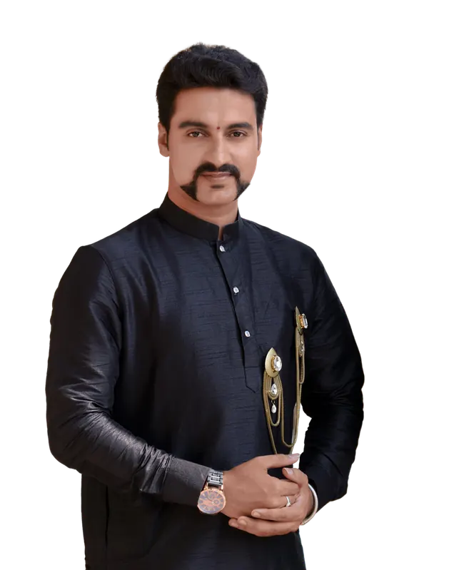
      <span class="plate">AIR graded artist · Mysuru</span>
    </div>
  </div>
</section>

<section class="bb-band" aria-labelledby="bb-t">
  <div class="wrap">
    <a href="bhajana-bharata.html" class="flip-wrap" aria-label="Bhajana Bharata logo, turning between Kannada and English. Open the Bhajana Bharata page">
      <span class="flip"><span class="face kn"></span><span class="face en"></span></span></a>
    <div class="bb-copy">
      <span class="caps">The flagship concert</span>
      <h2 id="bb-t">Bhajana Bharata, a musical pilgrimage</h2>
      <p>Bhajans, chants and theatre songs that travel across Bharata in one evening. Now on tour after the 64th Bengaluru Ganesh Utsava.</p>
      <div class="bb-next" id="bb-next" hidden><span class="caps">Next concert</span><b id="bb-next-t"></b><span id="bb-next-v"></span></div>
      <div class="btns"><a class="btn solid" href="bhajana-bharata.html">Enter Bhajana Bharata →</a><a class="btn" href="bhajana-bharata.html#tour">All upcoming dates →</a></div>
    </div>
  </div>
</section>

<section class="yt" id="youtube" aria-labelledby="yt-t">
  <div class="wrap">
    <div class="yt-head">
      <h2 id="yt-t">On <em>YouTube</em></h2>
      <p>HarshaDhwani – ShreeHarsha. Live songs, original compositions, the G GURU podcast and the DVG Kagga Suggi series.</p>
    </div>
    <div class="yt-top">
      <a class="feat" href="https://www.youtube.com/watch?v=bFBvAUEJrS8" target="_blank" rel="noopener">
        <span class="thumb">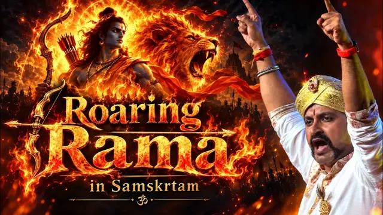<span class="play" aria-hidden="true"></span><span class="dur">4:34</span></span>
        <span class="mono" style="color:var(--gold)">Trending · 2.1M views · from Bhajana Bharata</span>
        <h3>Roaring Rama, a rap in Sanskrit</h3>
        <p>Written and composed by ShreeHarsha in February 2022, performed at the 64th Bengaluru Ganesh Utsava.</p>
      </a>
      <div class="top-list">
        <span class="caps">Most watched</span>
        <a class="tl" href="https://www.youtube.com/watch?v=jcr5FTXEjoQ" target="_blank" rel="noopener"><span class="thumb">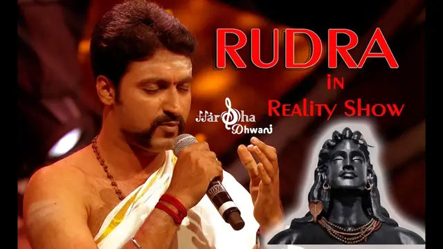<span class="play" aria-hidden="true"></span></span><span><b>Vibrant Rudra chanting on a reality show</b><small>9.4M views · 2022</small></span></a>
        <a class="tl" href="https://www.youtube.com/watch?v=X_zWsj74kbA" target="_blank" rel="noopener"><span class="thumb">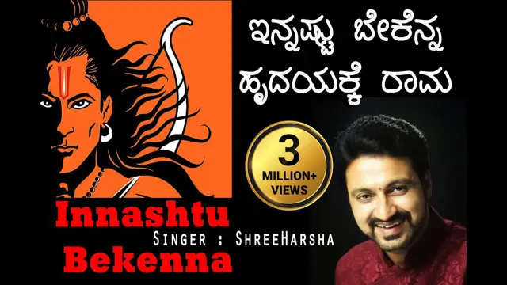<span class="play" aria-hidden="true"></span></span><span><b>Innashtu Bekenna Hrudayakke Rama</b><small>5.8M views · 2020</small></span></a>
        <a class="tl" href="https://www.youtube.com/watch?v=MRIRWWFJvdU" target="_blank" rel="noopener"><span class="thumb">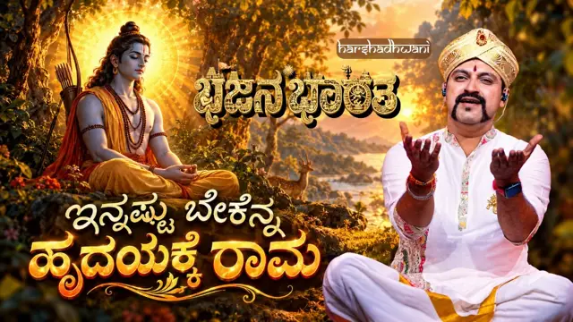<span class="play" aria-hidden="true"></span></span><span><b>Innashtu Bekenna, live at Bengaluru Ganesha Utsava 2026</b><small>981K views · 2026</small></span></a>
        <a class="tl" href="https://www.youtube.com/watch?v=QQAFXIv_bP4" target="_blank" rel="noopener"><span class="thumb"><span class="play" aria-hidden="true"></span></span><span><b>Gajavadana Heramba · B. V. Karanth theatre music</b><small>960K views · 2022</small></span></a>
      </div>
    </div>
    <div class="strip-head caps"><span>Latest on the channel</span><span>Scroll or drag<i aria-hidden="true"></i></span></div>
    <div class="reel" id="reel" tabindex="0" aria-label="Latest videos, scrollable sideways"></div>
    <div class="series">
      <a href="https://www.youtube.com/watch?v=zkrBD2zxgSw" target="_blank" rel="noopener"><b>G GURU podcast</b><span>Conversations with Vid. Dr. R. S. Nandakumar</span></a>
      <a href="https://www.youtube.com/watch?v=fMwgp7svXYI" target="_blank" rel="noopener"><b>DVG Kagga Suggi</b><span>Kavi Geeta Bhava Series 1</span></a>
      <a href="https://www.youtube.com/channel/UCPV7axwbPNaxjWlqh84Lj8g?sub_confirmation=1" target="_blank" rel="noopener"><b>Subscribe ↗</b><span>HarshaDhwani – ShreeHarsha</span></a>
    </div>
  </div>
</section>

<section class="receiver" id="dial" aria-labelledby="dial-t">
  <div class="wrap">
    <div class="rx-head">
      <h2 id="dial-t">Tune the <span class="tint">dial</span></h2>
      <p>Ten forms of music, one voice. Each station has its own colour and, where there is one, a video from his channel. Drag the needle, tap a preset, or use the arrow keys.</p>
    </div>
    <div class="set">
      <div class="band-wrap">
        <div class="glass" id="glass" tabindex="0" role="slider" aria-label="Tuning band" aria-valuemin="530" aria-valuemax="1610" aria-valuenow="580" aria-valuetext="580 kilohertz">
          <canvas id="band" aria-hidden="true"></canvas>
          <div class="needle" id="needle"></div>
        </div>
        <div class="readout">
          <div class="display" id="display" aria-live="polite">
            <span class="freq mono" id="freq">580 kHz</span>
            <h3 id="gname">Karnataka Classical</h3>
            <span class="kname" lang="kn" id="kname">ಕರ್ನಾಟಕ ಶಾಸ್ತ್ರೀಯ</span>
            <p class="fact" id="fact"></p>
          </div>
          <a class="vid" id="vid" href="https://www.youtube.com/channel/UCPV7axwbPNaxjWlqh84Lj8g" target="_blank" rel="noopener">
            <span class="thumb" id="vthumb">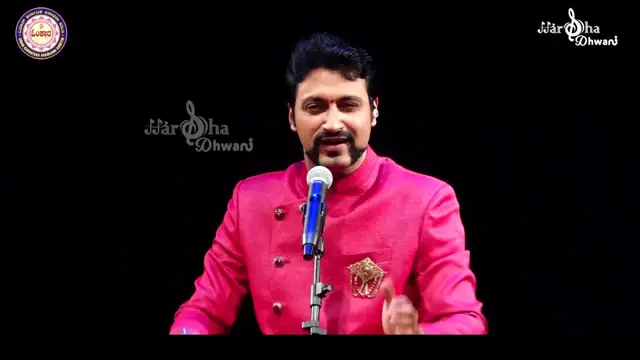<span class="play" aria-hidden="true"></span><span class="novid" id="novid" hidden>No video yet</span></span>
            <span><b id="vtitle">Toredu Jeevisabahude</b><br><small id="vmeta">11K views</small></span>
          </a>
          <div class="meter" id="meter" aria-hidden="true"><i></i><i></i><i></i><i></i><i></i><i></i><i></i><i></i><span>Signal</span></div>
        </div>
      </div>
      <div class="controls">
        <div class="ctrl">
          <button class="power" id="power" type="button" aria-pressed="false"><span class="lamp" aria-hidden="true"></span><span id="power-l">Power off</span></button>
          <label class="caps" for="vol">Volume</label>
          <input class="vol" id="vol" type="range" min="0" max="100" value="45">
          <p class="hint">Sa–Pa–Sa tanpura drone made in your browser. Static between stations.</p>
        </div>
        <div class="ctrl">
          <span class="caps">Presets</span>
          <ul class="stations" id="stations"></ul>
        </div>
      </div>
    </div>
    <div class="rx-foot caps"><span>Band 530–1610 kHz</span><span>Facts from the 2025 profile · videos from his channel</span></div>
  </div>
</section>

<section class="sec" id="air" aria-labelledby="air-t" style="--c:var(--turmeric)">
  <div class="wrap sec-grid">
    <div class="sec-label"><span class="num">02</span><span class="caps">All India Radio</span></div>
    <div class="sec-body">
      <h2 id="air-t">The <em>hat-trick</em></h2>
      <p class="intro">Three national level wins at the <b>All India Radio music competitions (AIR, Govt. of India), in 2014, 2015 and 2016</b>, each in a different form of music. He is the only person to achieve it, and is a graded artist of AIR.</p>
      <div class="trick">
        <div class="medal" style="--m:var(--saffron)"><span class="place">1<sup>st</sup></span><b>Devotional music</b><p>National level, All India Radio competitions</p></div>
        <div class="medal" style="--m:var(--leaf)"><span class="place">1<sup>st</sup></span><b>Folk music</b><p>National level, All India Radio competitions</p></div>
        <div class="medal" style="--m:var(--lotus)"><span class="place">2<sup>nd</sup></span><b>Light music</b><p>National level, All India Radio competitions</p></div>
      </div>
      <p class="note-line">While receiving the national award he performed twice at <b>AIR Hyderabad</b> and at <b>AIR Trivandrum</b>.</p>
    </div>
  </div>
</section>

<section class="sec" id="world" aria-labelledby="world-t" style="--c:var(--peacock)">
  <div class="wrap sec-grid">
    <div class="sec-label"><span class="num">03</span><span class="caps">International</span></div>
    <div class="sec-body">
      <h2 id="world-t">HarshaDhwani <em>on tour</em></h2>
      <p class="intro">His live concerts are called <b>HarshaDhwani</b>, enjoyed by every age group. The international shows have been staged in <b>23 cities</b>.</p>
      <div class="board">
        <div class="board-head mono"><span>Departures · HarshaDhwani Live</span><span>23 cities</span></div>
        <ul class="cities" id="cities"></ul>
      </div>
      <div class="posters">
        <figure class="wide"><figcaption class="caps">New Zealand</figcaption></figure>
        <figure>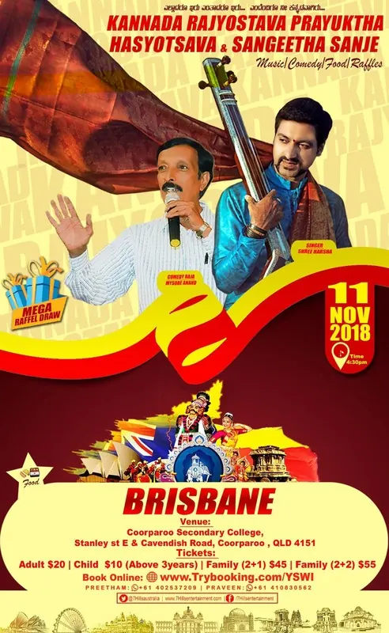<figcaption class="caps">Brisbane</figcaption></figure>
        <figure>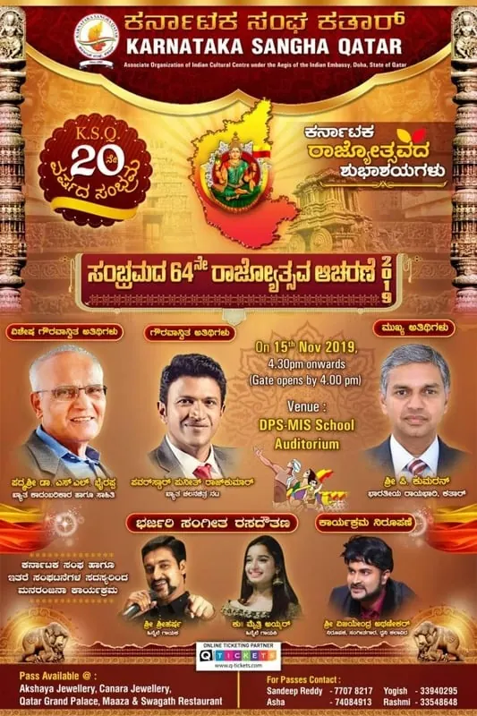<figcaption class="caps">Qatar</figcaption></figure>
        <figure>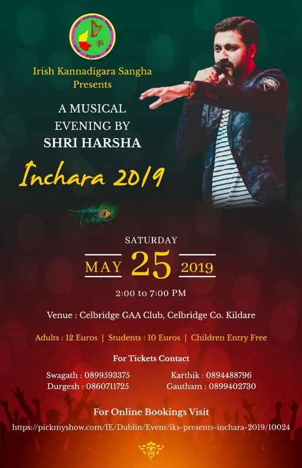<figcaption class="caps">Inchara 2019</figcaption></figure>
      </div>
    </div>
  </div>
</section>

<section class="sec" id="reviews" aria-labelledby="rev-t" style="--c:var(--lotus)">
  <div class="wrap sec-grid">
    <div class="sec-label"><span class="num">04</span><span class="caps">Reviews</span></div>
    <div class="sec-body">
      <h2 id="rev-t">What the <em>sanghas</em> said</h2>
      <div class="reviews">
        <figure class="review" style="--q:var(--gold-pale)"><blockquote>HarshaDhwani concert at Auckland, New Zealand has been a record in the 20 years history of Kannada Sangha celebrations. It was both a musical and magical experience to witness such a versatile singer entertaining each and everyone.</blockquote><figcaption><b>Sri. Prabhakar</b>President, New Zealand Kannada Koota</figcaption></figure>
        <figure class="review" style="--q:var(--peacock)"><blockquote>ShreeHarsha is a never exhausting one man army. We feel proud to say we have witnessed such talent in our lifetime.</blockquote><figcaption><b>Sri. Narayan</b>President, Sydney Kannada Shaale</figcaption></figure>
        <figure class="review" style="--q:var(--lotus)"><blockquote>His idea of transcending and captivating audience with his versatility is a treat to watch. We will remember this evening forever.</blockquote><figcaption><b>Sri. Sharma</b>President, Melbourne Kannada Sangha</figcaption></figure>
        <figure class="review" style="--q:var(--turmeric)"><blockquote>Never heard and also never imagined so many musical forms in one singer. His energy will bring a smile on our faces and a feel of great joy in our hearts. We wish to have his live concert again and again.</blockquote><figcaption><b>Sri. Srikanth</b>President, Western Australia Kannada Sangha (Inc)</figcaption></figure>
      </div>
      <a class="btn" href="https://youtu.be/Dg7M5x100qg" target="_blank" rel="noopener">Watch: HarshaDhwani international live concert ↗</a>
    </div>
  </div>
</section>

<section class="sec" id="screen" aria-labelledby="scr-t" style="--c:var(--lilac)">
  <div class="wrap sec-grid">
    <div class="sec-label"><span class="num">05</span><span class="caps">TV & radio</span></div>
    <div class="sec-body">
      <h2 id="scr-t">On <em>screen</em> and on air</h2>
      <div class="screens">
        <div class="screen big"><span class="ch" style="--c:var(--lotus)">Zee Kannada</span><b>2nd Runner-up</b><p>SaReGaMaPa Season 13, the Kannada singing reality show. He reached the Grand Finale and earned admiration among Karnataka-origin people around the world.</p></div>
        <div class="screen"><span class="ch" style="--c:var(--turmeric)">TV9 Karnataka</span><b>Voice of Bangalore</b><p>Won the title in Season 7 of the music reality show hosted by Garuda Mall, Bangalore.</p></div>
        <div class="screen"><span class="ch" style="--c:var(--peacock)">Colors Super</span><b>Kannada Kogile</b><p>Special performance on the reality show.</p></div>
        <div class="screen"><span class="ch" style="--c:var(--leaf)">Udaya</span><b>Sampattige Saval</b><p>Celebrity guest on the game show.</p></div>
        <div class="screen"><span class="ch" style="--c:var(--sky)">Etv Bharat</span><b>Special invitee</b><p>Represented Karnataka music at the channel's celebrations, Ramoji Rao Film City, Telangana.</p></div>
        <div class="screen"><span class="ch" style="--c:var(--vermilion)">93.5 Red FM Mysuru</span><b>MP3 with Vinay</b><p>Unplugged Kannada retro songs with RJ Vinay Shankar, 9 to 11 pm.</p></div>
        <div class="screen"><span class="ch" style="--c:var(--saffron)">GandhadaGudi FM, Bay Area</span><b>90-minute interview</b><p>Online show with admirers chatting from different parts of the USA.</p></div>
        <div class="screen"><span class="ch" style="--c:var(--gold)">Bengaluru</span><b>Ganesha Utsava 2019 & 2026</b><p>Performed at the Bengaluru Ganesha Utsava in 2019, and returned in 2026 with Bhajana Bharata.</p></div>
      </div>
    </div>
  </div>
</section>

<section class="sec" id="work" aria-labelledby="work-t" style="--c:var(--leaf)">
  <div class="wrap sec-grid">
    <div class="sec-label"><span class="num">06</span><span class="caps">Ideas & projects</span></div>
    <div class="sec-body">
      <h2 id="work-t">Beyond the <em>concert</em></h2>
      <div class="projects">
        <div class="proj" style="--c:var(--lotus)"><span class="caps">Ministry of Culture grant</span><h3>Manaswini</h3><p>A Music–Dance–Paint feature on <b>respecting women in all walks of life</b>, supported by a grant from the Ministry of Culture, Govt. of India.</p><a href="https://www.youtube.com/playlist?list=PLQp5A3NSGMO7HECm-Z-zRCfAscgkhOX2D" target="_blank" rel="noopener">Watch on YouTube ↗</a>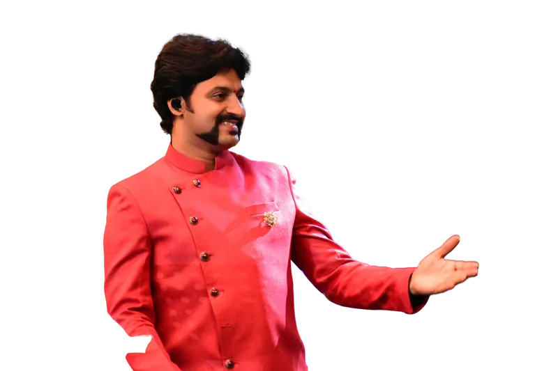</div>
        <div class="proj" style="--c:var(--peacock)"><span class="caps">Medico-musical programme</span><h3>RaagAarogya</h3><p>A pioneering programme conceived by ShreeHarsha on <b>the effects of raaga on specific ailments</b>, as an introduction to music therapy.</p>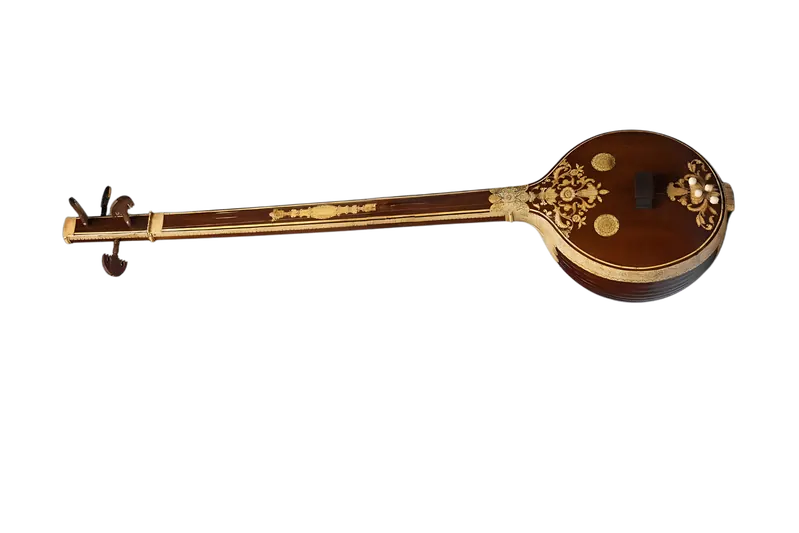</div>
        <div class="proj" style="--c:var(--turmeric)"><span class="caps">Playback · Sandalwood</span><h3>Maari Habba</h3><p>A fast-beat number for the film <b>10ne Taragati</b>, in which he also appears as a guest artist. Playback singer in more than 8 Kannada films.</p><a href="https://www.youtube.com/watch?v=C2yCaj2i1Vw" target="_blank" rel="noopener">Play the song ↗</a></div>
        <div class="proj" style="--c:var(--lilac)"><span class="caps">CD</span><h3>Manmathini</h3><p>His song sits alongside songs by <b>Dr. S.P. Balasubramanyam, Sri Rajesh Krishnan and Sri Vijay Prakash</b> on this CD.</p><p>About 45 of his songs are on SoundCloud, with more than 60,000 plays from over 60 countries.</p><a href="https://soundcloud.com/shree-harsha-singer" target="_blank" rel="noopener">SoundCloud ↗</a></div>
      </div>
    </div>
  </div>
</section>

<section class="sec" id="awards" aria-labelledby="aw-t" style="--c:var(--saffron)">
  <div class="wrap sec-grid">
    <div class="sec-label"><span class="num">07</span><span class="caps">Titles</span></div>
    <div class="sec-body">
      <h2 id="aw-t"><em>Awards</em></h2>
      <div class="award-row">
        <div style="display:grid;gap:18px">
          <p class="intro">Conferred the title <b>Sadhaka Ratna</b> by the Babburukamme Sangha at its State Level Meet, February 2015, Bengaluru, in recognition of his achievements in music.</p>
          <div class="titles">
            <span class="title" style="--c:var(--gold-pale)"><small>Babburukamme Sangha · 2015</small>Sadhaka Ratna</span>
            <span class="title" style="--c:var(--lotus)">Aadarsha Pratibha Ratna</span>
            <span class="title" style="--c:var(--peacock)">Mysuru Ratna</span>
            <span class="title" style="--c:var(--leaf)">Saadhana Prakaasha</span>
            <span class="title" style="--c:var(--lilac)">Saaraswata Saradara</span>
            <span class="title" style="--c:var(--saffron)"><small>2019</small>Yuva Saadhaka</span>
            <span class="title" style="--c:var(--sky)">Naada Gaana Kalopasaka</span>
          </div>
        </div>
        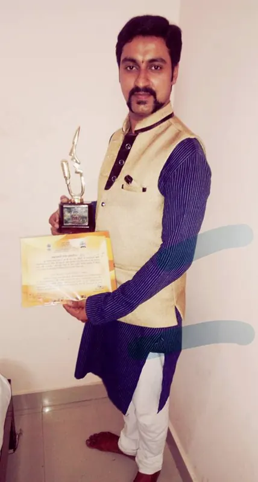
      </div>
    </div>
  </div>
</section>

<section class="sec" id="roots" aria-labelledby="roots-t" style="--c:var(--sky)">
  <div class="wrap sec-grid">
    <div class="sec-label"><span class="num">08</span><span class="caps">Roots</span></div>
    <div class="sec-body">
      <h2 id="roots-t">Training, <em>stage</em> and gurus</h2>
      <div class="duo">
        <div class="list">
          <div class="li" style="--c:var(--peacock)"><span class="mono">25 yrs</span><p>Learning Karnataka classical music in Mysuru. Passed the Karnataka classical music exam with 90%, 1st rank.</p></div>
          <div class="li" style="--c:var(--peacock)"><span class="mono">15+ yrs</span><p>Hindustani and light music practice.</p></div>
          <div class="li" style="--c:var(--peacock)"><span class="mono">Gamaka</span><p>Cleared the Gamaka Pravesha exam with distinction.</p></div>
          <div class="li" style="--c:var(--peacock)"><span class="mono">10</span><p>Instruments, self-taught by observation and practice.</p></div>
          <div class="li" style="--c:var(--lotus)"><span class="mono">Since 2004</span><p>Major roles in 12+ dramas directed by Sri Mandya Ramesh with Natana, his drama troupe.</p></div>
          <div class="li" style="--c:var(--lotus)"><span class="mono">2005</span><p>Represented Karnataka at the International Children's Meet, Bal Bhavan, Delhi.</p></div>
          <div class="li" style="--c:var(--lotus)"><span class="mono">2006</span><p>State level Best Child Actor.</p></div>
          <div class="li" style="--c:var(--lotus)"><span class="mono">Stage</span><p>Lead role in the play "Tunta Robin" at Mumbai Karnataka Sangha.</p></div>
          <div class="li" style="--c:var(--lotus)"><span class="mono">Director</span><p>Conceived videos on student life, voting awareness, Mother's Day, and love and affection.</p></div>
        </div>
        <div class="gurus">
          <span class="caps" style="color:var(--cream-soft)">Gurus</span>
          <div class="guru" style="--c:var(--turmeric)"><b>Vidushi Ramagururachar</b><span>His first guru, for nearly 5 years.</span></div>
          <div class="guru" style="--c:var(--gold)"><b>Dr. Vid. R. S. Nandakumar</b><span>Guru for the last 16 years. Son of musicologist Dr. R. Satyanarayana. ShreeHarsha is pursuing Vidwat in Karnataka classical vocal.</span></div>
          <div class="guru" style="--c:var(--lilac)"><b>Late Sri Raju Anantaswamy</b><span>Light music composer and singer.</span></div>
          <div class="guru" style="--c:var(--peacock)"><b>Smt. Sunita Chandrakumar</b><span>Mysuru.</span></div>
          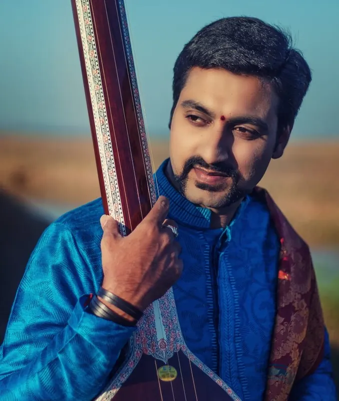
        </div>
      </div>
    </div>
  </div>
</section>

<section class="sec" id="moments" aria-labelledby="mo-t" style="--c:var(--lotus)">
  <div class="wrap sec-grid">
    <div class="sec-label"><span class="num">09</span><span class="caps">Gallery</span></div>
    <div class="sec-body">
      <h2 id="mo-t"><em>Moments</em></h2>
      <div class="moments">
        <figure class="m-a" style="--c:var(--turmeric)">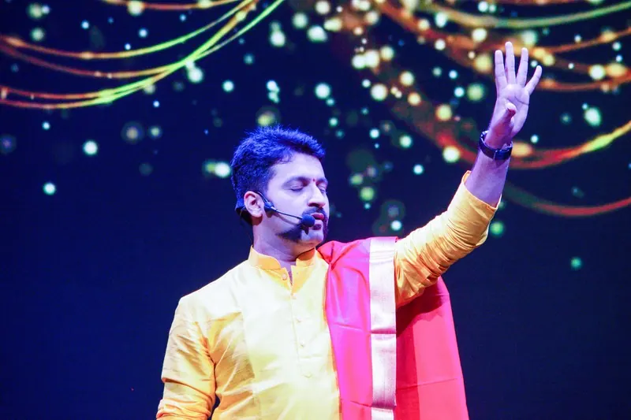</figure>
        <figure class="m-b" style="--c:var(--saffron)">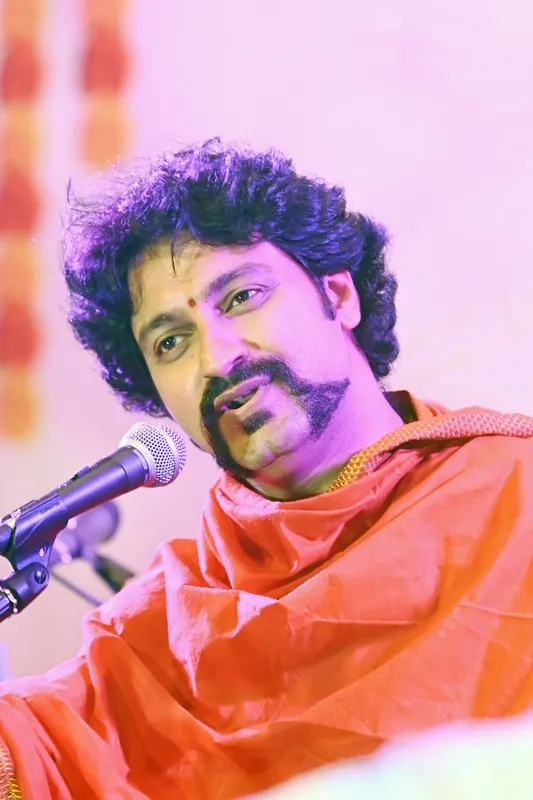</figure>
        <figure class="m-c" style="--c:var(--leaf)">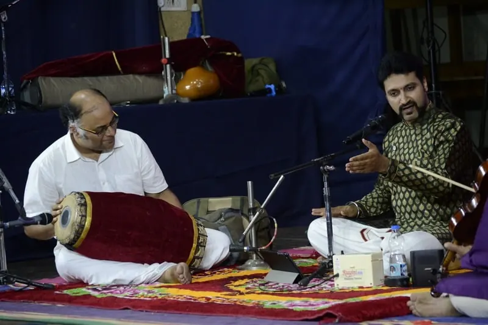</figure>
        <figure class="m-d" style="--c:var(--lotus)">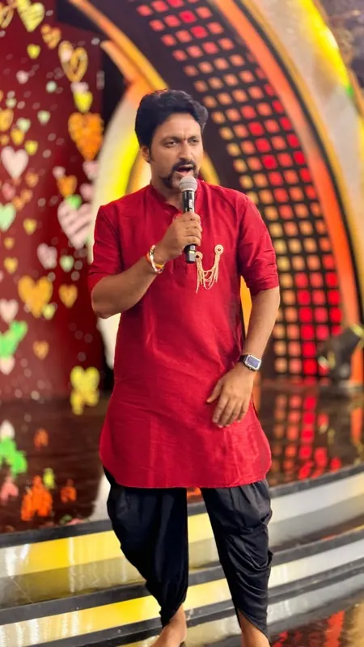</figure>
        <figure class="m-e" style="--c:var(--lilac)">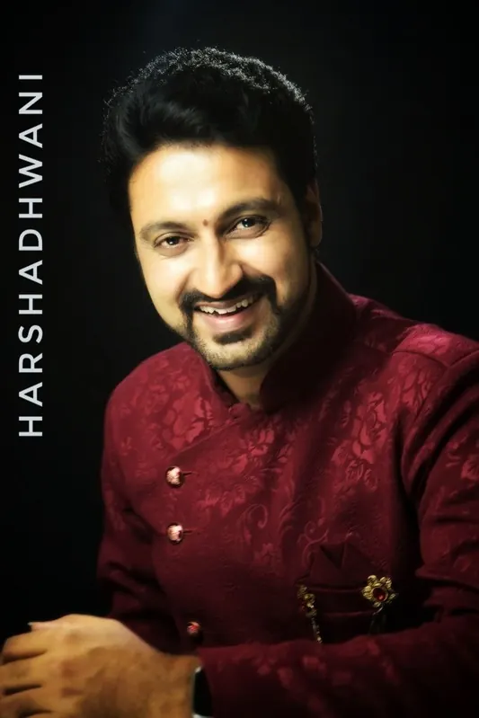</figure>
        <figure class="m-f" style="--c:var(--peacock)">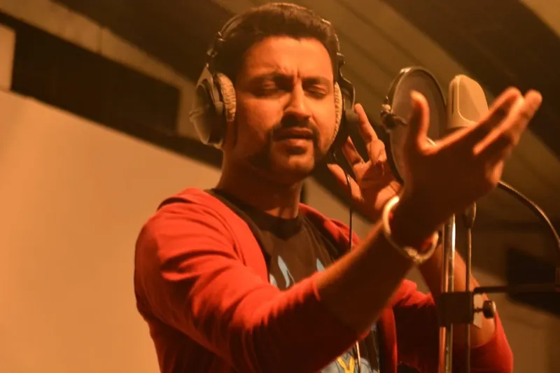</figure>
        <figure class="m-g" style="--c:var(--sky)">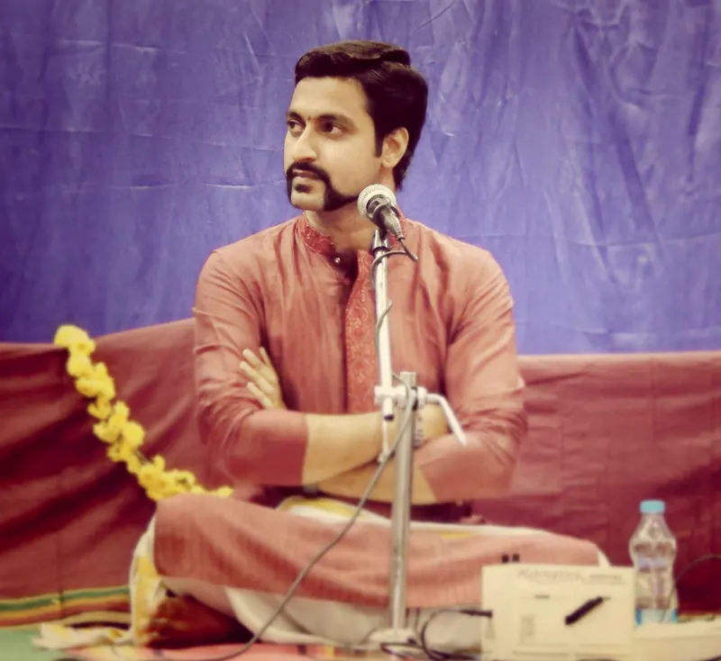</figure>
        <figure class="m-c" style="--c:var(--turmeric)">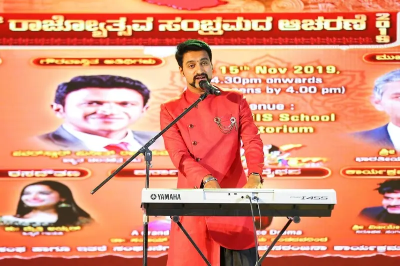</figure>
        <figure class="m-c" style="--c:var(--vermilion)">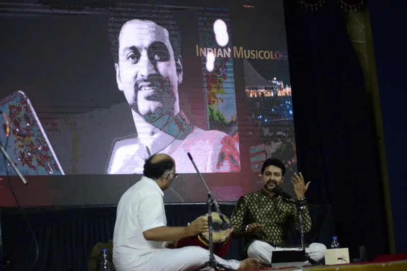</figure>
        <figure class="m-c" style="--c:var(--leaf)">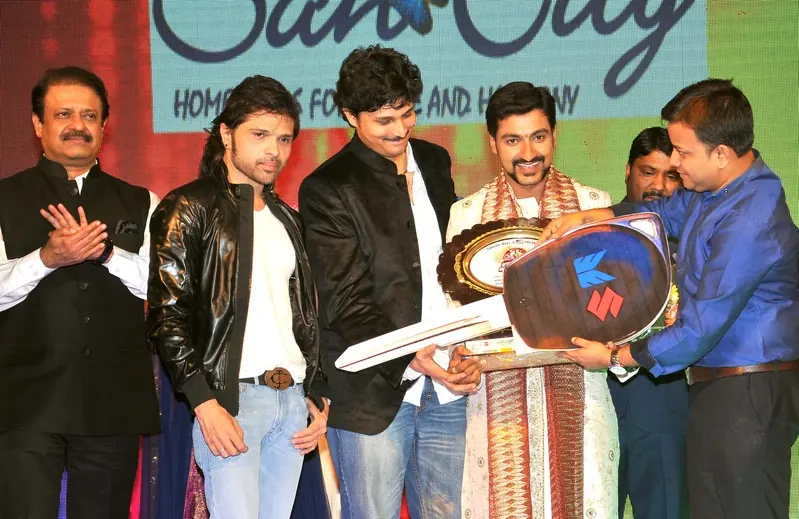</figure>
      </div>
    </div>
  </div>
</section>
</main>

<footer>
  <div class="wrap">
    <p class="foot-big">Harsha<span>Dhwani</span> Live</p>
    <p class="intro" style="max-width:62ch">Retro-Metro songs of Bollywood and Sandalwood, and more than 10 music forms. Appreciated by many organisations and corporate companies.</p>
    <div class="foot-row">
      <nav class="socials" aria-label="Social">
        <a style="--c:var(--kumkum);color:var(--cream)" href="https://www.youtube.com/channel/UCPV7axwbPNaxjWlqh84Lj8g" target="_blank" rel="noopener">YouTube</a>
        <a style="--c:var(--sky)" href="https://www.facebook.com/shreeharshaofficial/" target="_blank" rel="noopener">Facebook</a>
        <a style="--c:var(--turmeric)" href="https://www.instagram.com/harshadhwani_shreeharsha/" target="_blank" rel="noopener">Instagram</a>
        <a style="--c:var(--saffron)" href="https://soundcloud.com/shree-harsha-singer" target="_blank" rel="noopener">SoundCloud</a>
        <a style="--c:var(--gold)" href="bhajana-bharata.html">Bhajana Bharata</a>
      </nav>
      <span class="caps">www.harshadhwani.in · concept demo</span>
    </div>
  </div>
</footer>

<script>
(function(){
  const YT='https://www.youtube.com/watch?v=',CH='https://www.youtube.com/channel/UCPV7axwbPNaxjWlqh84Lj8g';
  const css=v=>getComputedStyle(document.documentElement).getPropertyValue(v).trim();
  const VIDEOS=[{"id": "S7McR1jMmOc", "title": "Gajavadana by ShreeHarsha at 64th Bengaluru Ganesha Utsava · HarshaDhwani · B V Karanth", "meta": "34K views · 4d ago"}, {"id": "5SlAJ4sIE5s", "title": "Amba Parameshwari by ShreeHarsha at 64th Bengaluru Ganesha Utsava  HarshaDhwani", "meta": "596K views · 1mo ago"}, {"id": "MSUgKRTnvq4", "title": "Kalabhairava & Shiva Tandava by ShreeHarsha at Bengaluru Ganesha Utsava · HarshaDhwani", "meta": "407K views · 1mo ago"}, {"id": "MRIRWWFJvdU", "title": "Innashtu Bekenna Hrudayakke rama · HarshaDhwani ShreeHarsha · Bengaluru Ganesha Utsava 2026", "meta": "981K views · 1mo ago"}, {"id": "bFBvAUEJrS8", "title": "ROARING RAMA - Trending Rap in Sanskrit by HarshaDhwani  ShreeHarsha · 64th BGU", "meta": "2.1M views · 1mo ago"}, {"id": "BSDp-aMLjHU", "title": "Dont Quarrel.-  Be Sensible · Dr. R S Nandakumar · G GURU podcast HarshaDhwani · ShreeHarsha", "meta": "13K views · 3mo ago"}, {"id": "zkrBD2zxgSw", "title": "Who is GURU ? · Be CAREFUL · Guru Purnime Special G Guru podcast · Vid R S Nandakumar · HarshaDhwani", "meta": "26K views · 3mo ago"}, {"id": "mNskOoSj8Hc", "title": "Unbelievable Facts of Old Mysuru · Vid R S Nandakumar · Anavarana · G GURU · HarshaDhwani ShreeHarsha", "meta": "24K views · 3mo ago"}, {"id": "bkpGdcn8lfA", "title": "Making Life as Musician..? · Vid Dr R S Nandakumar · G GURU podcast · HarshaDhwani", "meta": "5.4K views · 6mo ago"}, {"id": "gv560lvNRqM", "title": "MUSIC is LIFE....Understand it · Vid R S Nandakumar · Anavarana · HarshaDhwani", "meta": "5.1K views · 6mo ago"}, {"id": "2BiCLt6oumI", "title": "Democracy in Music - Surprising · Vid R S Nandakumar · G Guru · HarshaDhwani · ShreeHarsha", "meta": "4.5K views · 6mo ago"}, {"id": "crawMkIsn6Q", "title": "Toredu Jeevisabahude · HarshaDhwani · ShreeHarsha · Kanakadasaru", "meta": "11K views · 7mo ago"}, {"id": "l9lWHT-CZtM", "title": "Vibrant RUDRA by Shree Harsha (Original Version ) · HarshaDhwani", "meta": "53K views · 7mo ago"}, {"id": "n9dbFCXlKEc", "title": "SHOCKING & Wonderful story behind Trending ROARING RAMA SONG · HarshaDhwani · ShreeHarsha", "meta": "53K views · 1y ago"}, {"id": "xUf36MaGo6c", "title": "CHIDYUTHI - Namo Bharathi · Tejas H Badala · HarshaDhwani · ShreeHarsha", "meta": "6.9K views · 2y ago"}, {"id": "fMwgp7svXYI", "title": "LIFEU ಇಷ್ಟೇನೆ ..!!  - P-19 · DVG KAGGA SUGGI · Kavi Geeta Bhava Series 1 · HarshaDhwani", "meta": "4.8K views · 2y ago"}, {"id": "wuCiHYxCRDk", "title": "PARICHAY - Introducing HINDU to the WORLD · Atal Bihari Vajpayee · Hindu Tan Man · HarshaDhwani", "meta": "32K views · 2y ago"}, {"id": "vfRb5a5SNXM", "title": "Postal Address to PEACE - ನೆಮ್ಮದಿ - P-18 · DVG KAGGA SUGGI · Kavi Geeta Bhava Series 1 · HarshaDhwani", "meta": "3.9K views · 2y ago"}, {"id": "T_-booKB91c", "title": "Teenage Clashes in Every Home  - P-17 · DVG KAGGA SUGGI · Kavi Geeta Bhava Series 1 · HarshaDhwani", "meta": "2.1K views · 2y ago"}, {"id": "KJ8KBwLu_20", "title": "ಕಗ್ಗ ಓದಿದ್ರೆ ಏನಾಗುತ್ತೆ?  - P-16 · DVG KAGGA SUGGI · Kavi Geeta Bhava Series 1 · HarshaDhwani", "meta": "2.3K views · 2y ago"}, {"id": "s0isy6rgi4w", "title": "Comparing = Destroying  - P-15 · DVG KAGGA SUGGI · Kavi Geeta Bhava Series 1 · HarshaDhwani", "meta": "3K views · 2y ago"}, {"id": "f3mx5wbEBxc", "title": "Parents MISTAKE??  - P-14 · DVG KAGGA SUGGI · Kavi Geeta Bhava Series 1 · HarshaDhwani · Navikotsava", "meta": "3.3K views · 2y ago"}, {"id": "x039spt6niA", "title": "Handling Teenagers - P-13 · DVG KAGGA SUGGI · Kavi Geeta Bhava Series 1 · HarshaDhwani · Navikotsava", "meta": "3.1K views · 2y ago"}, {"id": "N-RS3NXr8kA", "title": "KITCHEN ಅಲ್ಲಿ KAGGA - P-12 · DVG KAGGA SUGGI · Kavi Geeta Bhava Series 1 · HarshaDhwani · Navikotsava", "meta": "3.8K views · 2y ago"}, {"id": "uiKt40vQoRc", "title": "Absolute TRUST - P-11 · DVG KAGGA SUGGI · Kavi Geeta Bhava Series 1 · HarshaDhwani · Navikotsava 2024", "meta": "2.5K views · 2y ago"}, {"id": "Ktlv2F07lMQ", "title": "Everyone is SANYASI - P-10 · KAGGA SUGGI · Kavi Geeta Bhava Series 1 · HarshaDhwani · Navikotsava 2024", "meta": "5.1K views · 2y ago"}, {"id": "mLCwgtI4A0o", "title": "What did YOU do - P-9 · DVG KAGGA SUGGI · Kavi Geeta Bhava Series 1 · HarshaDhwani · Navikotsava 2024", "meta": "1.6K views · 2y ago"}, {"id": "G5v0Fxu52OM", "title": "No Lame Reasons Please - SAMSKARA- P-8 · DVG KAGGA SUGGI · Kavi Geeta Bhava Series 1 · HarshaDhwani", "meta": "5.3K views · 2y ago"}, {"id": "HZa4QdBSNBU", "title": "MAFIA of Modernisation - P-7 · KAGGA SUGGI · Kavi Geeta Bhava Series 1 · HarshaDhwani · Navikotsava", "meta": "2.2K views · 2y ago"}, {"id": "0BUDqt_7KXQ", "title": "Detached Attachment - P-6 · DVG KAGGA SUGGI · Kavi Geeta Bhava Series 1 · HarshaDhwani · Navikotsava", "meta": "9.8K views · 2y ago"}];


  // next Bhajana Bharata concert (same list as the Bhajana Bharata page)
  (function(){
    const T=[['2026-11-16','Mysuru','MM\'s Auditorium, JK Grounds · 6.00 PM'],['2026-11-23','Belagavi · Bhajana Bharata 5','Jolle Group of Institutions'],['2026-12-13','Shivamogga · Bhajana Bharata 6','Kote Beedhi Anjaneya Temple · 6.00 PM'],['2026-12-18','Muscat · Bhajana Bharata 7','Hindu Temple · 6.00 PM'],['2026-12-23','Vijayawada · Bhajana Bharata 8','6.00 PM'],['2026-12-27','Ballari · Bhajana Bharata 9','Ayyappa Swami Temple · 6.00 PM']];
    const n=new Date(),today=new Date(n.getFullYear(),n.getMonth(),n.getDate());
    const nx=T.find(r=>new Date(r[0]+'T00:00:00')>=today);if(!nx)return;
    const d=new Date(nx[0]+'T00:00:00');
    document.getElementById('bb-next-t').textContent=d.getDate()+' '+d.toLocaleString('en-IN',{month:'long'})+' · '+nx[1];
    document.getElementById('bb-next-v').textContent=nx[2];document.getElementById('bb-next').hidden=false;
  })();
  const reel=document.getElementById('reel');
  VIDEOS.forEach(v=>{const a=document.createElement('a');a.href=YT+v.id;a.target='_blank';a.rel='noopener';
    a.innerHTML='<span class="thumb"></span><b></b><small></small>';
    a.querySelector('b').textContent=v.title;a.querySelector('small').textContent=v.meta;reel.appendChild(a)});
  let rd=false,rx=0,rs=0,rmoved=false;
  reel.addEventListener('pointerdown',e=>{if(e.pointerType!=='mouse')return;rd=true;rmoved=false;rx=e.clientX;rs=reel.scrollLeft;reel.classList.add('dragging')});
  addEventListener('pointermove',e=>{if(!rd)return;const dx=e.clientX-rx;if(Math.abs(dx)>4)rmoved=true;reel.scrollLeft=rs-dx});
  addEventListener('pointerup',()=>{rd=false;reel.classList.remove('dragging')});
  reel.addEventListener('click',e=>{if(rmoved){e.preventDefault();rmoved=false}},true);

  const S=[
    {f:580,en:'Karnataka Classical',sh:'Classical',kn:'ಕರ್ನಾಟಕ ಶಾಸ್ತ್ರೀಯ',c:'--gold',fact:'<b>25 years of learning in Mysuru.</b> 1st rank with 90% in the Karnataka classical music exam. Pursuing Vidwat under Dr. Vid. R. S. Nandakumar.',v:{id:'crawMkIsn6Q',t:'Toredu Jeevisabahude · Kanakadasaru',m:'11K views · 5:17'}},
    {f:695,en:'Hindustani',sh:'Hindustani',kn:'ಹಿಂದೂಸ್ತಾನಿ',c:'--lilac',fact:'<b>15+ years</b> of Hindustani and light music practice.',v:null},
    {f:810,en:'Light Music',sh:'Light',kn:'ಸುಗಮ ಸಂಗೀತ',c:'--lotus',fact:'<b>2nd place, national level All India Radio competitions.</b> Unplugged Kannada retro songs on 93.5 Red FM, Mysuru.',v:{id:'X_zWsj74kbA',t:'Innashtu Bekenna Hrudayakke Rama',m:'5.8M views · 10:33'}},
    {f:925,en:'Devotional',sh:'Devotional',kn:'ಭಕ್ತಿಗೀತೆ',c:'--saffron',fact:'<b>1st place, national level All India Radio competitions.</b> Part of his AIR hat-trick, 2014–2016.',v:{id:'5SlAJ4sIE5s',t:'Amba Parameshwari · Bengaluru Ganesha Utsava',m:'596K views · 5:30'}},
    {f:1040,en:'Folk',sh:'Folk',kn:'ಜಾನಪದ',c:'--leaf',fact:'<b>1st place, national level All India Radio competitions.</b> Folk completes the AIR hat-trick.',v:null},
    {f:1155,en:'Gamaka',sh:'Gamaka',kn:'ಗಮಕ',c:'--peacock',fact:'Cleared the <b>Gamaka Pravesha exam with distinction.</b>',v:null},
    {f:1270,en:'Ghazal',sh:'Ghazal',kn:'ಗಜಲ್',c:'--sky',fact:'Ghazals are among the <b>10 forms of music</b> he sings.',v:null},
    {f:1385,en:'Veda Recitation',sh:'Veda',kn:'ವೇದ ಪಠಣ',c:'--vermilion',fact:'Veda recitation is among the <b>10 forms of music</b> he renders. His Rudra chanting on a reality show is his most watched video.',v:{id:'jcr5FTXEjoQ',t:'Vibrant Rudra chanting on a reality show',m:'9.4M views · 1:51'}},
    {f:1490,en:'Film Songs',sh:'Film',kn:'ಚಲನಚಿತ್ರ ಗೀತೆ',c:'--turmeric',fact:'<b>Kannada and Hindi, new and retro.</b> Playback singer in 8+ Sandalwood films, including "Maari Habba" for 10ne Taragati.',v:{id:'C2yCaj2i1Vw',t:'Maari Habba · 10ne Taragati',m:'Playback song'}},
    {f:1590,en:'Theatre Music',sh:'Theatre',kn:'ರಂಗಗೀತೆ',c:'--gold-pale',fact:'A stage actor since childhood. His take on B. V. Karanth\'s "Gajavadana Heramba" from Hayavadana is one of his best-loved videos.',v:{id:'QQAFXIv_bP4',t:'Gajavadana Heramba · B. V. Karanth',m:'960K views · 6:04'}}
  ];
  S.forEach(s=>s.hex=css(s.c));
  const MIN=530,MAX=1610,LOCK=26;
  const root=document.documentElement,$=id=>document.getElementById(id);
  const glass=$('glass'),cv=$('band'),needle=$('needle'),disp=$('display');
  const meterBars=[...document.querySelectorAll('#meter i')].reverse();
  const reduce=matchMedia('(prefers-reduced-motion: reduce)').matches;
  let freq=580,target=580,cur=-1,dragging=false;
  const ul=$('stations');
  S.forEach(s=>{const li=document.createElement('li');const b=document.createElement('button');b.type='button';b.style.setProperty('--c','var('+s.c+')');b.innerHTML='<i aria-hidden="true"></i><span>'+s.en+'</span><span>'+s.f+'</span>';b.addEventListener('click',()=>tune(s.f,true));li.appendChild(b);ul.appendChild(li);s.btn=b});

  const cities=['Seattle','Atlanta','New York','Dallas','San Jose','Chicago','Greenville','New Zealand','Singapore','Perth','Brisbane','Melbourne','Sydney','Ireland','Qatar','London','Orpington','Leeds','Manchester','Muscat','Frankfurt','Mannheim','Stuttgart'];
  const cc=['--gold','--lotus','--peacock','--turmeric','--leaf','--lilac','--sky','--vermilion'];
  const cul=$('cities');cities.forEach((n,i)=>{const li=document.createElement('li');li.style.setProperty('--c','var('+cc[i%cc.length]+')');li.innerHTML=n+'<span>'+String(i+1).padStart(2,'0')+'</span>';cul.appendChild(li)});

  const x2f=x=>{const r=glass.getBoundingClientRect();return MIN+Math.min(1,Math.max(0,(x-r.left)/r.width))*(MAX-MIN)};
  const f2p=f=>(f-MIN)/(MAX-MIN);
  function draw(){
    const r=glass.getBoundingClientRect(),d=devicePixelRatio||1;cv.width=r.width*d;cv.height=r.height*d;
    const c=cv.getContext('2d');c.scale(d,d);const W=r.width,H=r.height,base=H*0.5,ink='#F7ECDA',dim='#9C7F7A';
    c.clearRect(0,0,W,H);
    S.forEach((s,i)=>{const x0=i===0?0:(f2p(S[i-1].f)+f2p(s.f))/2*W,x1=i===S.length-1?W:(f2p(s.f)+f2p(S[i+1].f))/2*W;c.fillStyle=s.hex;c.globalAlpha=(i===cur)?0.95:0.35;c.fillRect(x0,base-4,x1-x0,6)});
    c.globalAlpha=1;c.font='500 10px "IBM Plex Mono", monospace';c.textBaseline='top';c.fillStyle=dim;c.textAlign='left';c.fillText('kHz',8,8);
    for(let f=540;f<=1600;f+=10){const x=f2p(f)*W,major=f%100===0,mid=f%50===0;c.fillStyle=major?ink:dim;c.fillRect(Math.round(x),base+4,1,major?18:mid?11:6);
      if(major&&x<W-22&&(W>520||f%200===0)){c.fillStyle=ink;c.textAlign='center';c.fillText(String(f),x,base+26)}}
    S.forEach((s,i)=>{const x=f2p(s.f)*W,row=i%2,ly=row?base-34:base-54;c.fillStyle=s.hex;c.globalAlpha=(cur<0||i===cur)?1:0.78;
      c.beginPath();c.arc(x,base-8,4,0,6.28);c.fill();c.fillRect(Math.round(x),ly+13,1,base-12-(ly+13));
      c.font='600 '+(W<520?8.5:11)+'px "IBM Plex Mono", monospace';const t=s.sh.toUpperCase(),tw=c.measureText(t).width;c.textAlign='left';c.fillText(t,Math.max(4,Math.min(W-tw-4,x-tw/2)),ly)});
    c.globalAlpha=1;c.font='500 10px "IBM Plex Mono", monospace';c.textAlign='left';c.fillStyle=dim;c.textBaseline='bottom';c.fillText('HARSHADHWANI · '+Math.round(freq)+' kHz',8,H-8);
  }
  function nearest(f){let best=0,bd=1e9;S.forEach((s,i)=>{const d=Math.abs(s.f-f);if(d<bd){bd=d;best=i}});return {i:best,d:bd}}
  function setVideo(s){const a=$('vid'),img=$('vimg'),play=$('vthumb').querySelector('.play'),nv=$('novid');
    if(s.v){a.classList.remove('none');a.href=YT+s.v.id;img.hidden=false;img.src='img/yt/'+s.v.id+'.webp';play.hidden=false;nv.hidden=true;$('vtitle').textContent=s.v.t;$('vmeta').textContent=s.v.m}
    else{a.classList.add('none');a.href=CH;img.hidden=true;play.hidden=true;nv.hidden=false;$('vtitle').textContent='Browse the HarshaDhwani channel';$('vmeta').textContent='YouTube'}}
  function update(){
    needle.style.left=(f2p(freq)*100)+'%';
    const n=nearest(freq),strength=Math.max(0,1-n.d/LOCK),locked=n.d<=LOCK;
    $('freq').textContent=Math.round(freq)+' kHz'+(locked?' · locked':' · searching');
    meterBars.forEach((b,k)=>b.classList.toggle('on',k<Math.round(strength*meterBars.length)));
    if(locked){if(n.i!==cur){cur=n.i;const s=S[cur];root.style.setProperty('--tune','var('+s.c+')');$('gname').textContent=s.en;$('kname').textContent=s.kn;$('fact').innerHTML=s.fact;setVideo(s);S.forEach((t,j)=>t.btn.setAttribute('aria-current',j===cur?'true':'false'))}disp.classList.remove('static')}
    else disp.classList.add('static');
    glass.setAttribute('aria-valuenow',Math.round(freq));glass.setAttribute('aria-valuetext',Math.round(freq)+' kilohertz'+(locked?', '+S[n.i].en:', between stations'));
    audioMix(strength);draw();
  }
  let raf=0;
  function animate(){const dl=target-freq;if(Math.abs(dl)<0.5||reduce||dragging){freq=target;update();raf=0;return}freq+=dl*0.18;update();raf=requestAnimationFrame(animate)}
  function tune(f,smooth){target=Math.min(MAX,Math.max(MIN,f));if(!smooth){freq=target;update();return}if(!raf)raf=requestAnimationFrame(animate)}
  glass.addEventListener('pointerdown',e=>{dragging=true;glass.setPointerCapture(e.pointerId);tune(x2f(e.clientX),false)});
  glass.addEventListener('pointermove',e=>{if(dragging)tune(x2f(e.clientX),false)});
  const end=()=>{if(!dragging)return;dragging=false;const n=nearest(freq);if(n.d<=LOCK*1.6)tune(S[n.i].f,true)};
  glass.addEventListener('pointerup',end);glass.addEventListener('pointercancel',end);
  glass.addEventListener('keydown',e=>{const n=nearest(freq);let k=null;
    if(e.key==='ArrowRight'||e.key==='ArrowUp')k=target+10;else if(e.key==='ArrowLeft'||e.key==='ArrowDown')k=target-10;
    else if(e.key==='PageUp')k=S[Math.min(S.length-1,n.i+1)].f;else if(e.key==='PageDown')k=S[Math.max(0,n.i-1)].f;
    else if(e.key==='Home')k=S[0].f;else if(e.key==='End')k=S[S.length-1].f;if(k!==null){e.preventDefault();tune(k,true)}});
  addEventListener('resize',()=>{draw();sizeConfetti()});
  document.fonts&&document.fonts.ready.then(draw);

  let ac=null,master,droneG,noiseG,on=false;
  function startAudio(){ac=new (window.AudioContext||window.webkitAudioContext)();master=ac.createGain();master.gain.value=0;master.connect(ac.destination);
    droneG=ac.createGain();droneG.gain.value=0;droneG.connect(master);noiseG=ac.createGain();noiseG.gain.value=0;noiseG.connect(master);const sa=130.81;
    [[sa*0.75,.30],[sa,.42],[sa*1.002,.25],[sa*2,.22],[sa*1.5,.12]].forEach(([fr,g],i)=>{const o=ac.createOscillator();o.type='sawtooth';o.frequency.value=fr;const lp=ac.createBiquadFilter();lp.type='lowpass';lp.frequency.value=900+i*120;lp.Q.value=4;const og=ac.createGain();og.gain.value=g*0.18;
      const lfo=ac.createOscillator();lfo.frequency.value=0.13+i*0.05;const lg=ac.createGain();lg.gain.value=g*0.08;lfo.connect(lg);lg.connect(og.gain);const fl=ac.createOscillator();fl.frequency.value=0.07+i*0.03;const fg=ac.createGain();fg.gain.value=380;fl.connect(fg);fg.connect(lp.frequency);
      o.connect(lp);lp.connect(og);og.connect(droneG);o.start();lfo.start();fl.start()});
    const len=ac.sampleRate*2,buf=ac.createBuffer(1,len,ac.sampleRate),dd=buf.getChannelData(0);for(let i=0;i<len;i++)dd[i]=Math.random()*2-1;
    const ns=ac.createBufferSource();ns.buffer=buf;ns.loop=true;const bp=ac.createBiquadFilter();bp.type='bandpass';bp.frequency.value=2200;bp.Q.value=0.6;ns.connect(bp);bp.connect(noiseG);ns.start()}
  const vol=()=>$('vol').value/100;
  function audioMix(s){if(!ac)return;const t=ac.currentTime;droneG.gain.setTargetAtTime(s,t,0.08);noiseG.gain.setTargetAtTime((1-s)*0.16,t,0.05)}
  $('power').addEventListener('click',()=>{try{if(!ac)startAudio();on=!on;if(on)ac.resume();master.gain.setTargetAtTime(on?vol()*0.5:0,ac.currentTime,0.25);$('power').setAttribute('aria-pressed',String(on));$('power-l').textContent=on?'Power on':'Power off';update()}catch(err){$('power-l').textContent='Sound unavailable'}});
  $('vol').addEventListener('input',()=>{if(ac&&on)master.gain.setTargetAtTime(vol()*0.5,ac.currentTime,0.05)});

  const cf=$('confetti'),cx=cf.getContext('2d');let parts=[];
  function sizeConfetti(){const r=cf.getBoundingClientRect(),d=devicePixelRatio||1;cf.width=r.width*d;cf.height=r.height*d;cx.setTransform(d,0,0,d,0,0);
    const pal=['--gold','--saffron','--lotus','--turmeric','--gold-pale'].map(css);const n=Math.round(r.width/26);parts=[];const narrow=r.width<820;
    for(let i=0;i<n;i++){let x,y;if(narrow){x=Math.random()*r.width;y=Math.random()<.45?Math.random()*r.height*0.04:r.height*(0.72+Math.random()*0.28)}
      else{const side=Math.random();x=side<.5?Math.random()*r.width:(Math.random()<.5?Math.random()*r.width*0.1:r.width*(0.9+Math.random()*0.1));y=side<.5?(Math.random()<.5?Math.random()*r.height*0.12:r.height*(0.92+Math.random()*0.08)):Math.random()*r.height}
      parts.push({x,y,s:5+Math.random()*11,a:Math.random()*6.28,v:(Math.random()-.5)*0.004,dy:narrow?0:0.06+Math.random()*0.12,k:Math.floor(Math.random()*3),col:pal[i%pal.length]})}
    paint()}
  function paint(){const W=cf.clientWidth,H=cf.clientHeight;cx.clearRect(0,0,W,H);
    parts.forEach(p=>{cx.save();cx.translate(p.x,p.y);cx.rotate(p.a);cx.fillStyle=p.col;cx.strokeStyle=p.col;cx.globalAlpha=.8;
      if(p.k===0){cx.beginPath();cx.moveTo(0,-p.s);cx.quadraticCurveTo(p.s*.7,0,0,p.s);cx.quadraticCurveTo(-p.s*.7,0,0,-p.s);cx.fill()}
      else if(p.k===1){cx.beginPath();cx.arc(0,0,p.s*.22,0,6.28);cx.fill()}
      else{cx.beginPath();for(let k=0;k<8;k++){const ang=k*Math.PI/4;cx.moveTo(0,0);cx.lineTo(Math.cos(ang)*p.s*.5,Math.sin(ang)*p.s*.5)}cx.lineWidth=1.4;cx.stroke()}
      cx.restore()})}
  function drift(){const H=cf.clientHeight;parts.forEach(p=>{p.a+=p.v;p.y+=p.dy;if(p.y>H+20)p.y=-20});paint();requestAnimationFrame(drift)}
  sizeConfetti();if(!reduce)requestAnimationFrame(drift);
  update();
})();
</script>
